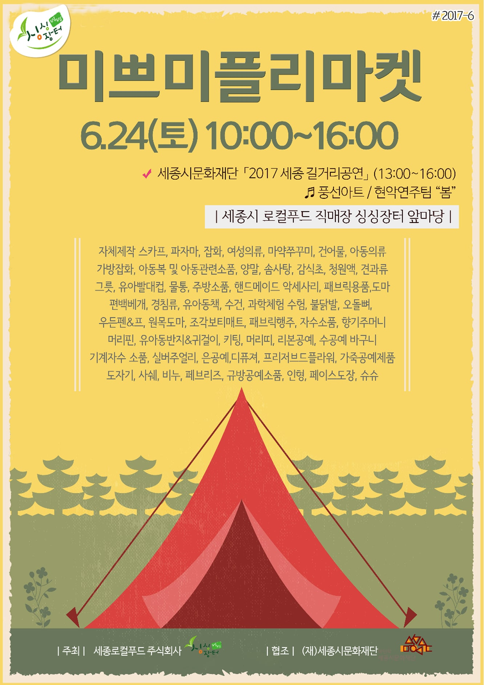

-
2017.11.09 싱싱문화관 오픈 이벤트 안내

-
지난해 11월 '리얼'의 감독이 이정섭 감독에서 이사랑 감독으로 교체된 사실이 뒤늦게 확인됐다. 이미 지난해 6월 촬영을 마친 '리얼'은 이정섭 감독의 연출 데뷔작으 로 알려져 있었다. 하지만 각종 포털사이트에 '리얼'의 감독 표기가 바뀌어 있던 것. 이와 관련해 한 관계자는 "'리얼' 감독이 이정섭 감독에 서 이사랑 감독으로 교체됐다. 이정섭 감독은 '리얼' 프 로젝트에서 아예 빠졌다. 현재 이사랑 감독이 후반 작업 을 맡아 편집 중이다"고 밝혔다. '리얼' 측은 감독 교체 사유로 '내부 사정'이라며 공식입장을 내놓았다
